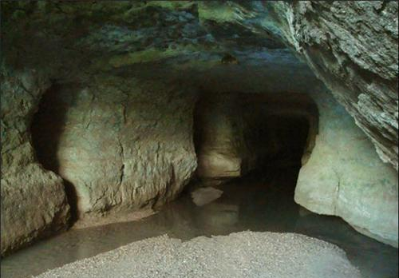
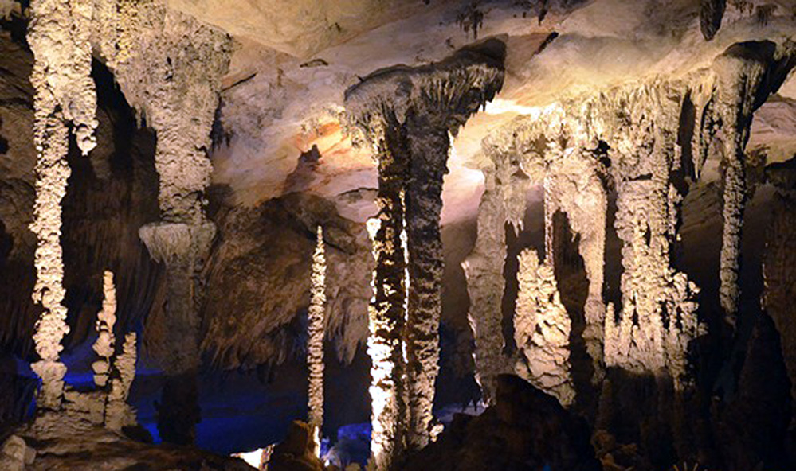

The Enhanting Caves of Meghalaya
Siju Dobakkol is situated on the banks of the Simsang river below the village of Siju in Meghalaya, North-East India.
From the entrance, a large beautifully sculptured stream passage is followed in a north-westerly direction for 120m where a large chamber is met(70m by 20m by 25m). This is the home of a huge colony of bats,from here the river passage is followed,exiting the chambet via an arch in the left wall for another 240m to a point 400m into the ave. At this pint the route divides,to the right a large chamber is entered(60m by 21m by 24m) and a climb upwards over a large boulders for some 60m leads to another large chamber(70m by 30m by 30m)with a large and a smaller stream entering at roof height. A small stream crosses the chamber floor and disappears down a pasage some 700m into the cave and at 1000m a parallel side tunnel enables the main stream left at 400m to be regained.
Siju Dobakkol is the home of tens of thousands of bats. it is bio-speleologically the best researched cave in the Indian subcontinent having been investigated by the unrivalled interdisciplinary research project undertaken as early as 1922 by Stanley Kemp and K Chopra of the Indian Museum,Kolkata. Until 1981 it was India's longest cave at 1200m. Today with 4,772m of surveyed length it is currently India's 14th longest.
